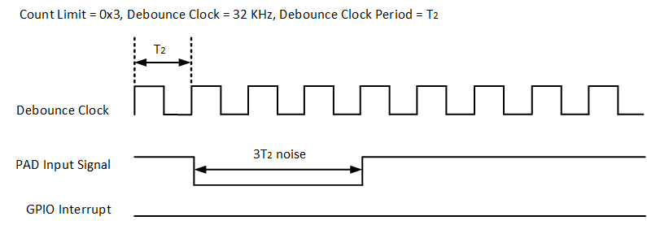
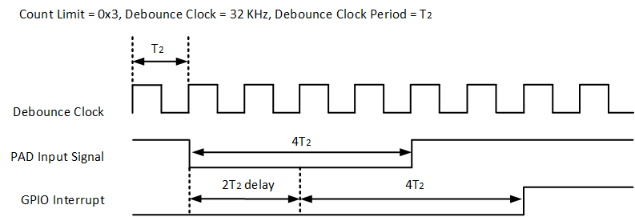

GPIO
示例列表
本章介绍 GPIO 示例的详细信息。RTL87x2G 为 GPIO 外设提供以下示例。
功能概述
通用输入/输出引脚（GPIO）被分组为一个或多个端口，每个端口最多有 32 个 GPIO。 RTL87x2G 内嵌了 2 个端口，因此有 64 个 GPIO 引脚。可以配置为输入或输出模式。
当输入模式时，外部电平信号变化时，可以触发中断。
GPIO 支持去抖动功能。
特性列表
最多支持 2 个 GPIO 端口，共提供 64 个映射到 IO PAD 的 GPIO 引脚。
可配置输入/输出。
双输出模式：开漏/推挽。
在 GPIO 的输出和输入模式下，可以读取引脚电平。
电平/边沿触发中断。
触发极性：
电平触发：高/低。
边沿触发：上升/下降沿。
Debounce 特性：
GPIO 支持去抖动功能，每 4 个 GPIO 共享一个去抖动计数器。
去抖动计数器时钟源：CLK_32K_TIMER 或 GPIO_CLK。
去抖动计数器时钟分频：1, 1/2, 1/4, 1/8, 1/16, 1/32, 1/40, 1/64。
8 位去抖动计数器。
GPIO 输出
每个 GPIO 都可以设置为输出模式，通过设置初始化结构体参数 GPIO_InitTypeDef::GPIO_Dir 为 GPIO_DIR_OUT 将对应引脚设置为输出模式。
支持开漏和推挽两种模式，通过初始化结构体参数 GPIO_InitTypeDef::GPIO_OutPutMode 进行配置。
每个 GPIO 的输出电平可以通过调用函数 GPIO_WriteBit() 进行配置，其中 1 表示输出高电平， 0 表示输出低电平。
在输出模式下，可以读取 GPIO 的电平状态。通过调用函数 GPIO_ReadOutputDataBit() 读取对应引脚的 GPIO 电平状态。
GPIO 输入
每个 GPIO 可以设置为输入模式，通过设置初始化结构体参数 GPIO_InitTypeDef::GPIO_Dir 为 GPIO_DIR_IN 将对应引脚设置为输入模式。
在输入模式下，可以读取 GPIO 的电平状态。通过调用函数 GPIO_ReadInputDataBit() 读取对应引脚的 GPIO 电平状态。
GPIO 可以检测外部电平变化，满足设定条件，可以触发中断。通过设定 GPIO_InitTypeDef::GPIO_ITCmd 为 ENABLE 开启 GPIO 中断。
中断的触发条件支持电平触发和边沿触发，通过 GPIO_InitTypeDef::GPIO_ITTrigger 进行设定。
中断的触发极性支持上升沿（高电平）/下降沿（低电平）触发，通过 GPIO_InitTypeDef::GPIO_ITPolarity 进行设定。
Debounce 功能
GPIO 支持去抖动功能。GPIO 去抖动功能可以过滤掉输入信号的毛刺。
通过设定 GPIO_InitTypeDef::GPIO_ITDebounce 为 ENABLE 开启 GPIO 去抖功能。
Debounce 时间的计算公式如下所示：
其中 count limit 通过 GPIO_InitTypeDef::GPIO_DebounceCntLimit 进行设置。
\(T_2\) 指 debounce clock period(分频后)，可以通过 GPIO_InitTypeDef::GPIO_DebounceClkSource 和 GPIO_InitTypeDef::GPIO_DebounceClkDiv
计算得到，计算公式如：\(T_2 = \frac{1}{\text{debounce clock source}} \times \text{debounce clock divide}\) 。
Debounce 的消抖原理图如下所示，此时 count limit 设置为 0x3，根据 debounce 时间的计算公式可以得到如下结论：在 PAD 输入信号 \(<= 3T_2\) 时，会被当成无效信号被滤除，所以经过 GPIO 消抖后的输出信号为一条无脉冲的波形，不会触发 GPIO 中断。

GPIO 消抖功能示意图1
在 PAD 输入信号 \(>= 4T_2\) 时，会被视为有效的信号，但要注意从 PAD 输入信号到消抖输出信号存在固定 \(2T_2\) 的延迟，所以实际触发 GPIO 中断的时间也会固定有 \(2T_2\) 的延迟。

GPIO 消抖功能示意图2
常见问题
GPIO 自触发中断
GPIO 在如下四种模式下第一次上电初始化时，会自触发一次中断：
PAD 设置为输入高，采用上升沿触发中断。
PAD 设置为输入高，采用双边沿触发中断。
PAD 设置为输入低，采用下降沿触发中断。
PAD 设置为输入低，采用双边沿触发中断。
为避免中断误触发，在 GPIO 中断配置时应遵循如下设置流程：
屏蔽 GPIO 中断：
GPIO_MaskINTConfig(GPIO_PORT, GPIO_PIN, ENABLE)。使能 GPIO 中断：
GPIO_INTConfig(GPIO_PORT, GPIO_PIN, ENABLE)。清除 GPIO 中断标志位：
GPIO_ClearPendingBit(GPIO_PORT, GPIO_PIN)。取消屏蔽 GPIO 中断：
GPIO_MaskINTConfig(GPIO_PORT, GPIO_PIN, DISABLE)。
若需要更改 GPIO 中断配置时，应遵循如下设置流程：
屏蔽 GPIO 中断：
GPIO_MaskINTConfig(GPIO_PORT, GPIO_PIN, ENABLE)。修改 GPIO 中断配置（设置中断触发类型和极性）：
GPIO_SetITTrigger(GPIO_PORT, GPIO_PIN, GPIO_TriggerMode)GPIO_SetITPolarity(GPIO_PORT, GPIO_PIN, GPIO_ITPolarity)...。清除 GPIO 中断标志位：
GPIO_ClearPendingBit(GPIO_PORT, GPIO_PIN)。取消屏蔽 GPIO 中断：
GPIO_MaskINTConfig(GPIO_PORT, GPIO_PIN, DISABLE)。